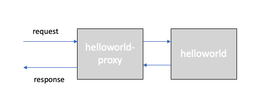

Network Policy and Calico¶
Prerequirements¶
Finish the Services, ClusterIP, NodePort, LoadBalancer, and Ingress labs,
- Guestbook Deployment
- Guestbook Service of type LoadBalancer
- Logged in to IBM Cloud account
- Connected to Kubernetes cluster
Network Policy and Calico¶
To control traffic flow at the IP address or port level (OSI layer 3 or 4), you can use Kubernetes NetworkPolicies. Network policies are implemented by a Network Plugin.
When defining a pod- or namespace- based NetworkPolicy, labels are used to select pods and define rules which specify what traffic is allowed to the selected pods. For IP based NetworkPolicies, you define policies based on IP blocks (CIDR ranges).
By default, pods are non-isolated and accept traffic from any source. Once there is any NetworkPolicy in a namespace selecting a particular pod, that pod will be isolated and reject any connections not allowed by any NetworkPolicy.
Network policies do not conflict; they are additive. A pod is restricted to what is allowed by the union of policies’ ingress/egress rules. Thus, order of evaluation does not affect the policy result.
There are four kinds of selectors in an ingress from section or egress to section:
- podSelector,
- namespaceSelector,
- podSelector and namespaceSelector,
- ipBlock for IP CIDR ranges.
The following example allows traffic from a frontend application to a backend application,
apiVersion: networking.k8s.io/v1
kind: NetworkPolicy
metadata:
name: my-network-policy
namespace: default
spec:
podSelector:
matchLabels:
role: db
policyTypes:
- Ingress
- Egress
ingress:
- from:
- podSelector:
matchLabels:
role: frontend
ports:
- protocol: TCP
port: 6379
egress:
- to:
- podSelector:
matchLabels:
role: backend
ports:
- protocol: TCP
port: 5978
The following example denies all ingress traffic,
apiVersion: networking.k8s.io/v1
kind: NetworkPolicy
metadata:
name: default-deny-ingress
spec:
podSelector: {}
policyTypes:
- Ingress
Every IBM Cloud Kubernetes Service cluster is set up with a network plug-in called Calico. Default network policies are set up to secure the public network interface of every worker node in the cluster.
You can use Kubernetes and Calico to create network policies for a cluster. With Kubernetes network policies, you can specify the network traffic that you want to allow or block to and from a pod within a cluster. To set more advanced network policies such as blocking inbound (ingress) traffic to a Network Load Balancer (NLB) services, use Calico network policies.
When a Kubernetes network policy is applied, it is automatically converted into a Calico network policy so that Calico can apply it as an Iptables rule. Both incoming and outgoing network traffic can be allowed or blocked based on protocol, port, and source or destination IP addresses. Traffic can also be filtered based on pod and namespace labels.
Calico network policies are a superset of the Kubernetes network policies and are applied by using calicoctl commands. Calico policies add the following features: - Allow or block network traffic on specific network interfaces regardless of the Kubernetes pod source or destination IP address or CIDR. - Allow or block network traffic for pods across namespaces. - Block inbound traffic to Kubernetes LoadBalancer or NodePort services.
Calico enforces these policies, including any Kubernetes network policies that are automatically converted to Calico policies, by setting up Linux Iptables rules on the Kubernetes worker nodes. Iptables rules serve as a firewall for the worker node to define the characteristics that the network traffic must meet to be forwarded to the targeted resource.
Calico network policies and Calico global network policies are applied using calicoctl. Syntax is similar to Kubernetes, but there a few differences
Zero Trust Network Model¶
Adopting a zero trust network model is best practice for securing workloads and hosts in your cloud-native strategy.
Create helloworld Proxy¶
For this tutorial, we will use an additional app called helloworld-proxy, which proxies requests to the helloworld app.

Deploy the helloworld proxy to the same namespace as the helloworld app,
kubectl create -f helloworld-proxy-deployment.yaml -n $MY_NS
kubectl create -f helloworld-proxy-service-loadbalancer.yaml -n $MY_NS
The deployment in your project namespace should now look as follows,
kubectl get all -n $MY_NS
NAME READY STATUS RESTARTS AGE
pod/helloworld-77bc887769-7n8wg 1/1 Running 0 27h
pod/helloworld-77bc887769-cts4v 1/1 Running 0 27h
pod/helloworld-77bc887769-w4tmc 1/1 Running 0 27h
pod/helloworld-proxy-5f689cf785-k7n6v 1/1 Running 0 15s
pod/helloworld-proxy-5f689cf785-qmmlz 1/1 Running 0 15s
pod/helloworld-proxy-5f689cf785-wh7x7 1/1 Running 0 15s
NAME TYPE CLUSTER-IP EXTERNAL-IP PORT(S) AGE
service/helloworld LoadBalancer 172.21.145.243 169.61.252.3 8080:30663/TCP 27h
service/helloworld-proxy LoadBalancer 172.21.74.243 169.61.252.4 8080:30005/TCP 14s
NAME READY UP-TO-DATE AVAILABLE AGE
deployment.apps/helloworld 3/3 3 3 27h
deployment.apps/helloworld-proxy 3/3 3 3 15s
NAME DESIRED CURRENT READY AGE
replicaset.apps/helloworld-77bc887769 3 3 3 27h
replicaset.apps/helloworld-proxy-5f689cf785 3 3 3 15s
Get the proxy service details and test the proxy,
PROXY_HOST=$(kubectl get svc helloworld-proxy -n $MY_NS --output json | jq -r '.status.loadBalancer.ingress[0].ip')
echo $PROXY_HOST
PROXY_NODEPORT=$(kubectl get svc helloworld-proxy -n $MY_NS --output json | jq -r '.spec.ports[0].nodePort')
echo $PROXY_NODEPORT
Test the helloworld-proxy app, add the host: helloworld:8080 property in the data object, which tells the helloworld-proxy app to proxy the message to the host app, and send the request to the /proxy/api/messages endpoint of our helloworld-proxy app,
curl -L -X POST "http://$PROXY_HOST:$PROXY_NODEPORT/proxy/api/messages" -H 'Content-Type: application/json' -H 'Content-Type: application/json' -d '{ "sender": "remko", "host": "helloworld:8080" }'
{"id":"6e5ef78f-9e09-42f8-8294-347ece7cd07f","sender":"remko","message":"Hello remko (proxy)","host":"helloworld:8080"}
Apply Network Policy - Allow No Traffic¶
Define the Network Policy file to deny all traffic,
echo 'apiVersion: networking.k8s.io/v1
kind: NetworkPolicy
metadata:
name: helloworld-deny-all
spec:
podSelector: {}
policyTypes:
- Ingress
- Egress' > helloworld-policy-denyall.yaml
Create the Network Policy,
kubectl create -f helloworld-policy-denyall.yaml -n $MY_NS
networkpolicy.networking.k8s.io/helloworld-deny-all created
Test both the helloworld and the helloworld-proxy apps,
curl -L -X POST "http://$PUBLIC_IP:$PORT/api/messages" -H 'Content-Type: application/json' -d '{ "sender": "remko" }'
curl: (7) Failed to connect to 52.118.3.110 port 30663: Operation timed out
curl -L -X POST "http://$PROXY_HOST:$PROXY_PORT/proxy/api/messages" -H 'Content-Type: application/json' -H 'Content-Type: application/json' -d '{ "sender": "remko", "host": "helloworld:8080" }'
curl: (7) Failed to connect to 169.61.252.4 port 80: Operation timed out
It takes quite a long time before connections time out. All traffic is denied, despite that we have a LoadBalancer service added to each deployment,
kubectl get svc -n $MY_NS
NAME TYPE CLUSTER-IP EXTERNAL-IP PORT(S) AGE
helloworld LoadBalancer 172.21.145.243 169.61.252.3 8080:30663/TCP 30h
helloworld-proxy LoadBalancer 172.21.74.243 169.61.252.4 8080:30005/TCP 141m
Apply Network Policy - Allow Only Traffic From Proxy¶
Let's allow direct ingress traffic to the helloworld app on port 8080, but not allow traffic to the helloworld-proxy app.
Define the Network Policy file,
echo 'apiVersion: projectcalico.org/v3
kind: GlobalNetworkPolicy
metadata:
name: helloworld-allow
spec:
selector: app == 'helloworld'
types:
- Ingress
ingress:
- action: Allow
protocol: TCP
source:
selector: role == 'helloworld-proxy'
destination:
ports:
- 8080' > helloworld-calico-allow.yaml
Create the Network Policy,
calicoctl create -f helloworld-calico-allow.yaml
Successfully created 1 'GlobalNetworkPolicy' resource(s)
Review the existing NetworkPolices in the project namespace,
kubectl get networkpolicies -n $MY_NS
NAME POD-SELECTOR AGE
helloworld-deny-all <none> 3h10m
Review the existing GlobalNetworkPolicies,
kubectl get globalnetworkpolicies
NAME AGE
default.allow-all-outbound 33h
default.allow-all-private-default 33h
default.allow-bigfix-port 33h
default.allow-icmp 33h
default.allow-node-port-dnat 33h
default.allow-sys-mgmt 33h
default.allow-vrrp 33h
default.helloworld-allow 14ms
Test the helloworld and the `helloworld-proxy' apps again,
curl -L -X POST "http://$PUBLIC_IP:$PORT/api/messages" -H 'Content-Type: application/json' -d '{ "sender": "remko" }'
{"id":"19b0a0c0-ef05-4c91-8dd1-330e40d252ef","sender":"remko","message":"Hello remko (direct)","host":null}
curl -L -X POST "http://$PROXY_HOST:$PROXY_PORT/proxy/api/messages" -H 'Content-Type: application/json' -H 'Content-Type: application/json' -d '{ "sender": "remko", "host": "helloworld:8080" }'
curl: (7) Failed to connect to 169.61.252.4 port 80: Operation timed out
Cleanup¶
kubectl delete globalnetworkpolicy default.helloworld-allow
kubectl delete networkpolicy helloworld-deny-all